JEE Main 2026 (Session 2), 6 Apr Shift 2: worked solutions for review
Questions and options are NTA’s own images; the green option is NTA’s final key. Every solution below was written by Claude
and checked against NTA’s final key. It is not NTA’s solution. Please mark anything unclear or wrong.
Q1 · Mathematics · MCQ · ID 6911211201
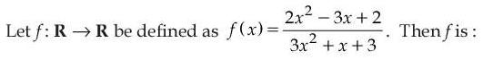
Hint 1: Look at what happens to f(x) as x → ±∞. Can a function with that behaviour cover all of R?
Hint 2: The denominator 3x² + x + 3 never vanishes (discriminant < 0). f(x) → 2/3 at both ends, and f(x) = k is a quadratic in x.
What this tests: One-one and onto for a rational function (range of (quadratic)/(quadratic)).
1. f is continuous and f(x) → 2/3 at both ends, so its range is a bounded interval, not R: f is not onto.
2. f(x) = 1 gives 2x² − 3x + 2 = 3x² + x + 3, i.e. x² + 4x + 1 = 0, which has two real roots. Two inputs give the same output: f is not one-one.
Answer: (4)
If this felt hard: Revise 'Relations and Functions'. For a ratio of quadratics, write f(x) = k as a quadratic in x and look at its discriminant.
Claude’s answer: 4 · NTA final key: 4 · agrees · Answer recomputed with SymPy (tools/verify_pyq_solutions.py)
Q2 · Mathematics · MCQ · ID 6911211202
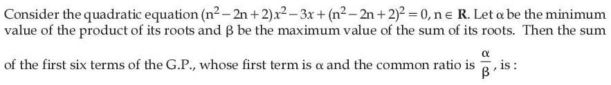
Hint 1: Write the product and the sum of the roots in terms of t = n² − 2n + 2. What is the smallest value t can take?
Hint 2: Product = t²/t = t and sum = 3/t, where t = (n − 1)² + 1 ≥ 1.
What this tests: Sum and product of roots; sum of a finite GP.
1. t ≥ 1, so the minimum product is α = 1 and the maximum sum is β = 3 (both at n = 1).
2. GP: first term 1, ratio 1/3.
3. S6 = (1 − (1/3)6)/(1 − 1/3) = (3/2)(728/729) = 364/243.
Answer: (3)
If this felt hard: Revise 'Quadratic Equations' (relations between roots and coefficients) and 'Sequences and Series' (GP sum).
Claude’s answer: 3 · NTA final key: 3 · agrees · Answer recomputed with SymPy (tools/verify_pyq_solutions.py)
Q3 · Mathematics · MCQ · ID 6911211203
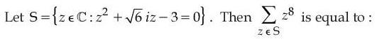
Hint 1: Solve the quadratic in z directly with the formula, then write each root in polar form.
Hint 2: z = (−√6 i ± √(−6 + 12))/2 = (√6/2)(±1 − i). Each root has |z|² = 3.
What this tests: Roots of a complex quadratic; De Moivre's theorem.
1. z1 = √3 e−iπ/4 and z2 = √3 e−i3π/4.
2. z8 = 3⁴ e−i2π = 81 and 3⁴ e−i6π = 81.
3. Sum = 162.
Answer: (1)
If this felt hard: Revise 'Complex Numbers' (polar form and powers).
Claude’s answer: 1 · NTA final key: 1 · agrees · Answer recomputed with SymPy (tools/verify_pyq_solutions.py)
Q4 · Mathematics · MCQ · ID 6911211204
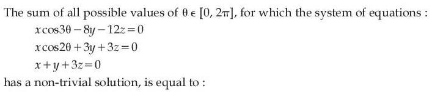
Hint 1: A homogeneous system has a non-trivial solution exactly when its coefficient determinant is zero.
Hint 2: The determinant works out to 6cos3θ + 12cos2θ + 12. Put c = cos θ and use cos3θ = 4c³ − 3c, cos2θ = 2c² − 1.
What this tests: Homogeneous linear systems (determinant = 0) with a trigonometric equation.
1. cos3θ + 2cos2θ + 2 = 0 becomes 4c³ + 4c² − 3c = 0, i.e. c(2c − 1)(2c + 3) = 0.
2. c = 0: θ = π/2, 3π/2. c = 1/2: θ = π/3, 5π/3. (c = −3/2 is impossible.)
3. Sum = 2π + 2π = 4π.
Answer: (4)
If this felt hard: Revise 'Determinants' (consistency of systems) and multiple-angle formulas from 'Trigonometric Functions'.
Claude’s answer: 4 · NTA final key: 4 · agrees · Answer recomputed with SymPy (tools/verify_pyq_solutions.py)
Q5 · Mathematics · MCQ · ID 6911211205
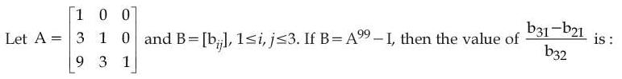
Hint 1: Write A = I + N. What is special about N² and N³?
Hint 2: N = A − I has N³ = O, so A99 = I + 99N + C(99, 2)N².
What this tests: Powers of a matrix of the form I + N with N nilpotent (binomial expansion).
1. N = [[0,0,0],[3,0,0],[9,3,0]], N² has only one non-zero entry: 9 in position (3,1).
2. B = 99N + 4851N². So b21 = 297, b32 = 297, b31 = 99 × 9 + 4851 × 9 = 44550.
3. (44550 − 297)/297 = 150 − 1 = 149.
Answer: (3)
If this felt hard: Revise 'Matrices'. When a matrix is I plus a strictly triangular part, the binomial theorem stops after a few terms.
Claude’s answer: 3 · NTA final key: 3 · agrees · Answer recomputed with SymPy (tools/verify_pyq_solutions.py)
Q6 · Mathematics · MCQ · ID 6911211206
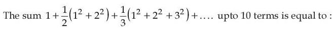
Hint 1: Find a formula for the n-th term first: (1/n)(1² + 2² + … + n²).
Hint 2: Tn = (1/n) × n(n + 1)(2n + 1)/6 = (2n² + 3n + 1)/6.
What this tests: Sum of a series using Σn and Σn².
1. Sum for n = 1 to 10: (2 × 385 + 3 × 55 + 10)/6 = 945/6.
2. = 315/2.
Answer: (3)
If this felt hard: Revise 'Sequences and Series' (special sums).
Claude’s answer: 3 · NTA final key: 3 · agrees · Answer recomputed with SymPy (tools/verify_pyq_solutions.py)
Q7 · Mathematics · MCQ · ID 6911211207
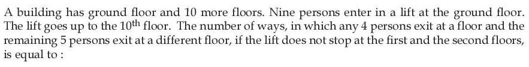
Hint 1: Which floors can people actually get out on? Count them first.
Hint 2: Floors 3 to 10: 8 floors. Choose the group of 4, then an ordered pair of different floors for the two groups.
What this tests: Counting: selection plus assignment to distinct places.
1. Choose the 4 who exit together: C(9, 4) = 126.
2. Floor for the group of 4: 8 ways; a different floor for the 5: 7 ways.
3. 126 × 56 = 7056.
Answer: (3)
If this felt hard: Revise 'Permutations and Combinations'. The groups have different sizes, so the order of the two floors matters.
Claude’s answer: 3 · NTA final key: 3 · agrees · Answer recomputed with SymPy (tools/verify_pyq_solutions.py)
Q8 · Mathematics · MCQ · ID 6911211208
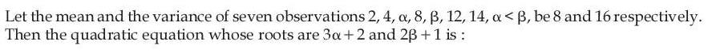
Hint 1: Use the mean to get α + β and the variance to get α² + β².
Hint 2: Σx = 7 × 8 = 56 and Σx² = 7(16 + 64) = 560.
What this tests: Mean and variance to recover unknown data values.
1. 40 + α + β = 56, so α + β = 16.
2. 424 + α² + β² = 560, so α² + β² = 136 and αβ = (256 − 136)/2 = 60.
3. α = 6, β = 10. Roots 3α + 2 = 20 and 2β + 1 = 21: x² − 41x + 420 = 0.
Answer: (2)
If this felt hard: Revise 'Statistics' (variance = mean of squares − square of mean).
Claude’s answer: 2 · NTA final key: 2 · agrees · Answer recomputed with SymPy (tools/verify_pyq_solutions.py)
Q9 · Mathematics · MCQ · ID 6911211209
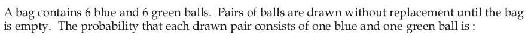
Hint 1: Count all ordered ways to split the 12 balls into 6 successive pairs, and count the ones where every pair is mixed.
Hint 2: Total = 12!/(2!)6. Favourable: put the 6 blues in order into the 6 pairs and the 6 greens in order: 6! × 6!.
What this tests: Probability by counting arrangements (or by multiplying step probabilities).
1. P = 6! × 6! × 26/12!.
2. = 720 × 720 × 64/479001600 = 16/231.
(Same answer step by step: (6×6/C(12,2)) × (5×5/C(10,2)) × … × 1 = 16/231.)
Answer: (3)
If this felt hard: Revise 'Probability'. The step-by-step product is a good cross-check.
Claude’s answer: 3 · NTA final key: 3 · agrees · Answer recomputed with SymPy (tools/verify_pyq_solutions.py)
Q10 · Mathematics · MCQ · ID 6911211210
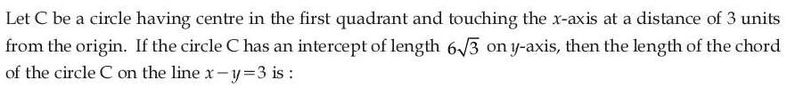
(1) 
(2) 
Hint 1: Touching the x-axis at (3, 0) fixes the centre as (3, r). Use the y-intercept to find r.
Hint 2: y-intercept = 2√(r² − 3²) = 6√3. Chord length = 2√(r² − d²), d = distance from the centre to the line.
What this tests: Circle: intercepts and chord length.
1. r² − 9 = 27, so r = 6 and the centre is (3, 6).
2. d = |3 − 6 − 3|/√2 = 3√2.
3. Chord = 2√(36 − 18) = 6√2.
Answer: (3)
If this felt hard: Revise 'Conic Sections' (circle).
Claude’s answer: 3 · NTA final key: 3 · agrees · Answer recomputed with SymPy (tools/verify_pyq_solutions.py)
Q11 · Mathematics · MCQ · ID 6911211211
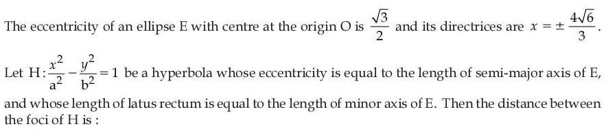
(2)
(3)
(4)
Hint 1: Get a and b of the ellipse from e and the directrix x = a/e. Then turn the two conditions on H into two equations in a and b.
Hint 2: Ellipse: a/e = 4√6/3 with e = √3/2, b² = a²(1 − e²). Hyperbola: eH² = 1 + b²/a² and latus rectum = 2b²/a.
What this tests: Ellipse and hyperbola parameters (eccentricity, directrix, latus rectum).
1. Ellipse: a = (4√6/3)(√3/2) = 2√2, b² = 8 × 1/4 = 2, so the minor axis is 2√2.
2. Hyperbola: eH = 2√2, so b² = 7a². Latus rectum 2b²/a = 14a = 2√2, so a = √2/7.
3. Distance between foci = 2a eH = 2(√2/7)(2√2) = 8/7.
Answer: (4)
If this felt hard: Revise 'Conic Sections'. Keep the ellipse's a, b separate from the hyperbola's a, b.
Claude’s answer: 4 · NTA final key: 4 · agrees · Answer recomputed with SymPy (tools/verify_pyq_solutions.py)
Q12 · Mathematics · MCQ · ID 6911211212
(1)
(2)
(3)
(4)
Hint 1: Find the ellipse first. Then use the equation of a chord whose midpoint is known.
Hint 2: a/e = 9 and e = 1/3 give a = 3, focus (1, 0), b² = 8. Chord with midpoint (h, k): hx/9 + ky/8 = h²/9 + k²/8 (T = S1).
What this tests: Locus of midpoints of focal chords (T = S1).
1. Ellipse x²/9 + y²/8 = 1, focus P(1, 0).
2. The chord passes through (1, 0): h/9 = h²/9 + k²/8.
3. Multiply by 72: 8h = 8h² + 9k², so 9y² = 8x(1 − x).
Answer: (1)
If this felt hard: Revise 'Conic Sections' (ellipse, chord with a given midpoint).
Claude’s answer: 1 · NTA final key: 1 · agrees · Answer recomputed with SymPy (tools/verify_pyq_solutions.py)
Q13 · Mathematics · MCQ · ID 6911211213
(1)
(2) 
(3)
(4)
Hint 1: Turn each inverse function into an angle in a right triangle and read off the needed ratio.
Hint 2: sin(tan−1(x√2)) = x√2/√(1 + 2x²). If sin θ = √(1 − x²) with x in (0, 1), then cos θ = x, so cot θ = x/√(1 − x²).
What this tests: Inverse trigonometric functions via right triangles.
1. x√2/√(1 + 2x²) = x/√(1 − x²).
2. Square and cancel x²: 2(1 − x²) = 1 + 2x², so x² = 1/4.
3. x = 1/2.
Answer: (1)
If this felt hard: Revise 'Inverse Trigonometric Functions'.
Claude’s answer: 1 · NTA final key: 1 · agrees · Answer recomputed with SymPy (tools/verify_pyq_solutions.py)
Q14 · Mathematics · MCQ · ID 6911211214
(1)
(2)
(3)
(4)
Hint 1: Shortest distance between skew lines = |(B − A)·(d1 × d2)|/|d1 × d2|.
Hint 2: A = (4, 3, 2), d1 = (1, 2, −3); B = (−2, 6, 5), d2 = (2, 4, −5).
What this tests: Shortest distance between skew lines.
1. d1 × d2 = (2, −1, 0), length √5.
2. B − A = (−6, 3, 3); dot product = −12 − 3 = −15.
3. Distance = 15/√5 = 3√5.
Answer: (3)
If this felt hard: Revise 'Three Dimensional Geometry'.
Claude’s answer: 3 · NTA final key: 3 · agrees · Answer recomputed with SymPy (tools/verify_pyq_solutions.py)
Q15 · Mathematics · MCQ · ID 6911211215
(1)
(2)
(3)
(4)
Hint 1: Expand (2a + 3b) × (a − b) using a × a = 0 and b × a = −a × b.
Hint 2: (2a + 3b) × (a − b) = −2(a × b) + 3(b × a) = −5(a × b). Area = half the length of the cross product.
What this tests: Area of a triangle with the cross product.
1. a × b = (0, 12, −12), length 12√2.
2. Area = (1/2) × 5 × 12√2 = 30√2.
3. Area² = 1800.
Answer: (3)
If this felt hard: Revise 'Vector Algebra'. Simplify the cross product algebraically before putting in numbers.
Claude’s answer: 3 · NTA final key: 3 · agrees · Answer recomputed with SymPy (tools/verify_pyq_solutions.py)
Q16 · Mathematics · MCQ · ID 6911211216
(1)
(2)
(3) 
(4)
Hint 1: tan(x − 2) behaves like (x − 2) near 2. For a finite limit, the quadratic must also vanish at x = 2.
Hint 2: Putting x = 2 gives 4r − 4 = 0, so r = 1 and the quadratic is (x − 2)(x + p). Then the limit is 2 + p.
What this tests: Limits (removing a 0/0 factor) and location of roots of a quadratic.
1. 2 + p = 5, so p = 3. Equation: x² − 3x + q = 0.
2. Both roots in (0, 2): D = 9 − 4q ≥ 0, f(0) = q > 0, f(2) = q − 2 > 0, and the vertex 3/2 is in (0, 2).
3. q is in (2, 9/4], so 4(α + β) = 8 + 9 = 17.
Answer: (3)
If this felt hard: Revise 'Limits and Derivatives' and 'Quadratic Equations' (roots in an interval).
Claude’s answer: 3 · NTA final key: 3 · agrees · Answer recomputed with SymPy (tools/verify_pyq_solutions.py)
Q17 · Mathematics · MCQ · ID 6911211217
(1)
(2)
(3) 
(4) 
Hint 1: Singular means det A = 0. That gives α.
Hint 2: det A = 3 − α, so α = 3. The integrand t² + 2t + 3 is always positive, so f is increasing on [1, 3].
What this tests: Determinants; maximum and minimum of a function defined by an integral.
1. M − m = f(3) − f(1) = ∫13 (t² + 2t + 3) dt.
2. = [t³/3 + t² + 3t] from 1 to 3 = 27 − 13/3 = 68/3.
3. 3(M − m) = 68.
Answer: (2)
If this felt hard: Revise 'Determinants' and 'Application of Derivatives' (increasing functions).
Claude’s answer: 2 · NTA final key: 2 · agrees · Answer recomputed with SymPy (tools/verify_pyq_solutions.py)
Q18 · Mathematics · MCQ · ID 6911211218
(1)
(2)
(3)
(4)
Hint 1: Put x = 0 in f(xy) = f(x)f(y). What does f(0) ≠ 0 force?
Hint 2: f ≡ 1. Differentiate x²g(x) = ∫1x (t² − t g(t)) dt and note g(1) = 0.
What this tests: Functional equation; integral equation turned into a linear differential equation.
1. 2xg + x²g' = x² − xg, so g' + 3g/x = 1.
2. Integrating factor x³: (x³g)' = x³, so x³g = x⁴/4 + C. g(1) = 0 gives C = −1/4.
3. g(2) = (4 − 1/4)/8 = 15/32.
Answer: (3)
If this felt hard: Revise 'Differential Equations' (linear, integrating factor) and the Fundamental Theorem of Calculus.
Claude’s answer: 3 · NTA final key: 3 · agrees · Answer recomputed with SymPy (tools/verify_pyq_solutions.py)
Q19 · Mathematics · MCQ · ID 6911211219
(1)
(2)
(3)
(4)
Hint 1: Where does the parabola y = x² − 8x meet the line y = −x? Those x-values are the limits.
Hint 2: x² − 8x = −x gives x = 0 and x = 7. Area = ∫07 (upper − lower) dx with upper −x and lower x² − 8x.
What this tests: Area between a line and a parabola.
1. Area = ∫07 (7x − x²) dx.
2. = 7 × 49/2 − 343/3 = 343/2 − 343/3 = 343/6.
Answer: (1)
If this felt hard: Revise 'Application of Integrals'.
Claude’s answer: 1 · NTA final key: 1 · agrees · Answer recomputed with SymPy (tools/verify_pyq_solutions.py)
Q20 · Mathematics · MCQ · ID 6911211220
(1)
(2)
(3)
(4)
Hint 1: Split the integrand into an odd part and an even part. What does the odd part give on [−1, 1]?
Hint 2: x³/(x² + 2|x| + 1) is odd, so it gives 0. For x ≥ 0 the rest is (x + 1)/(x + 1)² = 1/(x + 1).
What this tests: Definite integrals using odd and even functions.
1. Integral = 2∫01 1/(x + 1) dx.
2. = 2 loge2.
Answer: (2)
If this felt hard: Revise 'Integrals' (properties of definite integrals).
Claude’s answer: 2 · NTA final key: 2 · agrees · Answer recomputed with SymPy (tools/verify_pyq_solutions.py)
Q21 · Mathematics · Numerical · ID 6911211221
Hint 1: loge(x + y) ≤ 2 means x + y ≤ e² ≈ 7.39. List which pairs of natural numbers are in R.
Hint 2: R = {(x, y): x + y ≤ 7}. If (a, b) and (b, c) are in R for some b ≥ 1, then a ≤ 6 and c ≤ 6, and b = 1 always works for such a, c.
What this tests: Transitive closure of a relation.
1. Transitivity forces (a, c) into R for every a, c in {1, …, 6}.
2. Missing among these: pairs with a + c ≥ 8: 5 + 4 + 3 + 2 + 1 = 15.
3. After adding them, every pair has both entries ≤ 6 and all 36 such pairs are present, so the relation is transitive.
Answer: 15
If this felt hard: Revise 'Relations and Functions' (transitive relations).
Claude’s answer: 15 · NTA final key: 15 · agrees · Answer recomputed by script (tools/verify_pyq_solutions.py)
Note: Takes N = {1, 2, 3, …}, which matches the key.
Q22 · Mathematics · Numerical · ID 6911211222
Hint 1: Factor 1 − x³ = (1 − x)(1 + x + x²). Can 1 + x + x² be written using (1 − x)²?
Hint 2: 1 + x + x² = (1 − x)² + 3x. Expand ((1 − x)² + 3x)10 with the binomial theorem.
What this tests: Binomial theorem with a clever regrouping.
1. (1 − x³)10 = (1 − x)10 × Σ C(10, r)(3x)r(1 − x)20 − 2r = Σ C(10, r)3r xr(1 − x)30 − 2r.
2. So ar = C(10, r)3r.
3. 9a9/a10 = 9 × 10 × 3⁹/310 = 30.
Answer: 30
If this felt hard: Revise 'Binomial Theorem'. Look for a way to rewrite one factor in terms of the other.
Claude’s answer: 30 · NTA final key: 30 · agrees · Answer recomputed with SymPy (tools/verify_pyq_solutions.py)
Q23 · Mathematics · Numerical · ID 6911211223
Hint 1: PQ = PR means P is on the perpendicular bisector of QR. Which special point of the circle is also on it?
Hint 2: The perpendicular bisector of a chord passes through the centre (4, −3) and is perpendicular to x − y = 4, so its direction is (1, −1).
What this tests: Circle: perpendicular bisector of a chord passes through the centre.
1. P = (4 + t, −3 − t) with 2t² = 9.
2. 6α + 8β = 24 + 6t − 24 − 8t = −2t.
3. (6α + 8β)² = 4t² = 18.
Answer: 18
If this felt hard: Revise 'Conic Sections' (circle) and the parametric form of a line.
Claude’s answer: 18 · NTA final key: 18 · agrees · Answer recomputed with SymPy (tools/verify_pyq_solutions.py)
Q24 · Mathematics · Numerical · ID 6911211224
Hint 1: Find the foot of the perpendicular from P to the first line and from Q to the second. Notice anything?
Hint 2: Foot from a point X to a line A + t d: t = ((X − A)·d)/|d|². The image is 2 × foot − X.
What this tests: Image of a point in a line; area of a parallelogram from its diagonals.
1. Both feet are F = (−1, −1, 1). So R = (−2, 3, 2) and S = (−2, −3/2, 2), and PR, QS are diagonals bisecting each other at F.
2. PR = (−2, 8, 2), QS = (−2, −1, 2). PR × QS = (18, 0, 18), length 18√2.
3. Area = (1/2) × 18√2 = 9√2, so area² = 162.
Answer: 162
If this felt hard: Revise 'Three Dimensional Geometry' and 'Vector Algebra' (area = half |d1 × d2|).
Claude’s answer: 162 · NTA final key: 162 · agrees · Answer recomputed with SymPy (tools/verify_pyq_solutions.py)
Q25 · Mathematics · Numerical · ID 6911211225
Hint 1: g has a jump only at u = 0. So check where f is discontinuous and where f(x) crosses 0.
Hint 2: f(x) = 0 at x = −2 (x³ + 8) and x = 2 (x² − 4). f also jumps at x = 0 (from 8 to −4).
What this tests: Continuity of a composite of piecewise functions.
1. x = −2: f changes from negative to positive, so g(f(x)) jumps from −2 to 2.
2. x = 2: f changes from negative to positive: same jump.
3. x = 0: left limit g(8) = √12, value g(−4) = (−12)1/3: discontinuous.
4. Everywhere else both pieces are continuous. Total 3.
Answer: 3
If this felt hard: Revise 'Continuity and Differentiability'. Check where the inner function hits the breakpoint of the outer one.
Claude’s answer: 3 · NTA final key: 3 · agrees · Answer recomputed with SymPy (tools/verify_pyq_solutions.py)
Q26 · Physics · MCQ · ID 6911211226
(1) 
(2) 
(3) 
(4) 
Hint 1: Write V in terms of the diameter D. How does a power affect the relative error?
Hint 2: V = πD³/6, so ΔV/V = 3 ΔD/D.
What this tests: Propagation of errors in a power law.
1. 3 × 2% = 6%.
Answer: (3)
If this felt hard: Revise 'Units and Measurements' (errors).
Claude’s answer: 3 · NTA final key: 3 · agrees · Answer recomputed by script (tools/verify_pyq_solutions.py)
Q27 · Physics · MCQ · ID 6911211227
(1) 
(2) 
(3)
(4) 
Hint 1: Write each constant from a formula you know: E = kT, P = σAT⁴, E = hν, F = Gm₁m₂/r².
Hint 2: k = energy/temperature, σ = power/(area × T⁴), h = energy × time, G = force × r²/m².
What this tests: Dimensions of physical constants.
1. k: ML²T−2K−1 (III).
2. σ: (ML²T−3)/(L²K⁴) = MT−3K−4 (IV).
3. h: ML²T−1 (II).
4. G: M−1L³T−2 (I).
Answer: (3)
If this felt hard: Revise 'Units and Measurements' (dimensional formulae).
Claude’s answer: 3 · NTA final key: 3 · agrees · Theory question: not computable, needs a teacher’s review
Q28 · Physics · MCQ · ID 6911211228
(1)
(2)
(3)
(4)
Hint 1: Draw both forces: F at the top and friction f at the bottom contact. Write the linear and the rotational equation.
Hint 2: F + f = Ma and (F − f)R = Iα with α = a/R. Writing I = kMR² gives a = 2F/(M(1 + k)).
What this tests: Rolling without slipping with a force at the top (friction direction).
1. Sphere A: M = 5m, k = 2/5: aA = 2F/(7m).
2. Shell B: M = m, k = 2/3: aB = 2F/(5m/3) = 6F/(5m).
3. aA : aB = (2/7)/(6/5) = 10/42 = 5 : 21.
Answer: (1)
If this felt hard: Revise 'System of Particles and Rotational Motion'. Do not assume the friction direction: let the equations decide.
Claude’s answer: 1 · NTA final key: 1 · agrees · Answer recomputed with SymPy (tools/verify_pyq_solutions.py)
Q29 · Physics · MCQ · ID 6911211229
(1)
(2) 
(3)
(4) 
Hint 1: Use the work-energy theorem: net work = change in kinetic energy.
Hint 2: At x = 0, v = 0. At x = 5 m, v = 2 × 25 = 50 m/s.
What this tests: Work-energy theorem.
1. W = (1/2) × 1 × 50² − 0 = 1250 J.
Answer: (3)
If this felt hard: Revise 'Work, Energy and Power'.
Claude’s answer: 3 · NTA final key: 3 · agrees · Answer recomputed by script (tools/verify_pyq_solutions.py)
Note: The question says 'work done by the body'; NTA's key (1250 J) takes it as the net work done on the body (change in KE).
Q30 · Physics · MCQ · ID 6911211230
(1) 
(2) 
(3) 
(4) 
Hint 1: The right compartment is never heated and has adiabatic walls. What kind of process does its gas go through?
Hint 2: The piston is frictionless, so both sides always have the same pressure. Right side: PVγ = constant.
What this tests: Adiabatic compression of the unheated side of a piston.
1. Right side ends at pressure 27P/8.
2. V2 = 9 × (8/27)1/γ = 9 × (8/27)2/3 = 9 × 4/9 = 4 litres.
Answer: (2)
If this felt hard: Revise 'Thermodynamics' (adiabatic process, PVγ = constant).
Claude’s answer: 2 · NTA final key: 2 · agrees · Answer recomputed by script (tools/verify_pyq_solutions.py)
Q31 · Physics · MCQ · ID 6911211231
(1)
(2)
(3)
(4)
Hint 1: For a plane EM wave, E, B and k form a right-handed set, with |E| = c|B|.
Hint 2: From Faraday's law for a plane wave: k × E = ωB.
What this tests: Relation between E, B and k in an EM wave.
1. B = (k × E)/ω. Check the size: |B| = kE/ω = E/c.
2. The order E × k would give the opposite direction.
Answer: (2)
If this felt hard: Revise 'Electromagnetic Waves'.
Claude’s answer: 2 · NTA final key: 2 · agrees · Theory question: not computable, needs a teacher’s review
Q32 · Physics · MCQ · ID 6911211232
(1)
(2)
(3)
(4)
Hint 1: Find the velocity and the acceleration of the centre of mass. Compare their directions.
Hint 2: Equal masses: vcm = (v1 + v2)/2 and acm = (a1 + a2)/2.
What this tests: Motion of the centre of mass; path shape from v and a.
1. vcm = 2î + 2ĵ and acm = 3î + 3ĵ.
2. They are parallel, so the centre of mass speeds up along a fixed line: a straight-line path.
Answer: (3)
If this felt hard: Revise 'System of Particles and Rotational Motion' and 'Motion in a Plane' (the path curves only if a is not along v).
Claude’s answer: 3 · NTA final key: 3 · agrees · Answer recomputed by script (tools/verify_pyq_solutions.py)
Q33 · Physics · MCQ · ID 6911211233
(1)
(2)
(3)
(4)
Hint 1: Read one point off the straight line and use Y = stress/strain.
Hint 2: From the graph, W = 60 N gives Δl = 6 × 10−4 m. Y = (W/A)/(Δl/L).
What this tests: Young's modulus from a load-extension graph.
1. Stress = 60/10−5 = 6 × 10⁶ N/m².
2. Strain = 6 × 10−4/1 = 6 × 10−4.
3. Y = 1010 N/m².
Answer: (3)
If this felt hard: Revise 'Mechanical Properties of Solids'.
Claude’s answer: 3 · NTA final key: 3 · agrees · Answer recomputed by script (tools/verify_pyq_solutions.py)
Note: Read from the figure: the line passes through (60 N, 6 × 10^{−4} m).
Q34 · Physics · MCQ · ID 6911211234
(1)
(2)
(3)
(4)
Hint 1: Find the height of the vessel from its volume. Then find how high the hole is above the ground.
Hint 2: Height H = V/(πr²). Range = 2√(h × y), where h = depth of the hole below the water surface and y = height of the hole above the ground.
What this tests: Torricelli's law and projectile range.
1. H = 0.528/(π × 0.16) ≈ 1.05 m = 105 cm.
2. The hole is 105 − 70 = 35 cm above the vessel's base, so 105 + 35 = 140 cm above the ground.
3. Range = 2√(70 × 140) = 2 × 70√2 = 140√2 cm.
Answer: (2)
If this felt hard: Revise 'Mechanical Properties of Fluids' (efflux speed √(2gh)).
Claude’s answer: 2 · NTA final key: 2 · agrees · Answer recomputed by script (tools/verify_pyq_solutions.py)
Note: Uses π = 22/7, which makes the height exactly 105 cm.
Q35 · Physics · MCQ · ID 6911211235
(1)
(2)
(3)
(4)
Hint 1: With no heat lost, the total internal energy stays the same when the gases mix.
Hint 2: Monoatomic: U = (3/2)nRT for each gas, so 2T + 6(2T) = 8Tf.
What this tests: Mixing ideal gases (energy conservation).
1. 14T = 8Tf.
2. Tf = 7T/4.
Answer: (4)
If this felt hard: Revise 'Kinetic Theory' (internal energy of an ideal gas).
Claude’s answer: 4 · NTA final key: 4 · agrees · Answer recomputed by script (tools/verify_pyq_solutions.py)
Q36 · Physics · MCQ · ID 6911211236
(1)
(2)
(3)
(4)
Hint 1: Find k from the static stretch first.
Hint 2: k = mg/x. f = (1/2π)√(k/m). Spring energy = (1/2)k × (extension)², and the largest extension is the equilibrium stretch plus the amplitude.
What this tests: Spring-mass oscillation; energy stored at the lowest point.
1. k = 0.2 × 10/0.002 = 1000 N/m.
2. f = (1/2π)√(1000/0.2) = √5000/(2π) = 5√50/π Hz.
3. Largest extension = 2 + 2 = 4 mm, so energy = (1/2) × 1000 × (0.004)² = 8 × 10−3 J.
Answer: (1)
If this felt hard: Revise 'Oscillations'. A common slip is to use only the 2 mm amplitude for the spring's stretch.
Claude’s answer: 1 · NTA final key: 1 · agrees · Answer recomputed by script (tools/verify_pyq_solutions.py)
Q37 · Physics · MCQ · ID 6911211237
(1)
(2)
(3)
(4)
Hint 1: The field is minus the gradient of the potential.
Hint 2: E = −(∂V/∂x)î − (∂V/∂y)ĵ with ∂V/∂x = 10x and ∂V/∂y = −10y.
What this tests: Electric field from potential (E = −∇V).
1. E = −10x î + 10y ĵ.
2. At (2, 3): E = −20î + 30ĵ V/m.
Answer: (1)
If this felt hard: Revise 'Electrostatic Potential and Capacitance'. Watch the minus sign.
Claude’s answer: 1 · NTA final key: 1 · agrees · Answer recomputed with SymPy (tools/verify_pyq_solutions.py)
Q38 · Physics · MCQ · ID 6911211238
(1) 
(2)
(3) 
(4)
Hint 1: Use the right-hand rule for each wire at the midpoint. With opposite currents, do the fields add or cancel there?
Hint 2: Each wire gives B = μ0I/(2πd) with d = 4 cm. Opposite currents: the two fields point the same way between the wires.
What this tests: Magnetic field of long straight wires (superposition).
1. One wire: 2 × 10−7 × 30/0.04 = 1.5 × 10−4 T = 150 μT.
2. Both: 300 μT.
Answer: (2)
If this felt hard: Revise 'Moving Charges and Magnetism'. With currents in the same direction the fields would cancel at the midpoint.
Claude’s answer: 2 · NTA final key: 2 · agrees · Answer recomputed by script (tools/verify_pyq_solutions.py)
Q39 · Physics · MCQ · ID 6911211239
(1) 
(2)
(3) 
(4)
Hint 1: Write the flux through the loop, then differentiate with respect to time.
Hint 2: Φ = BA cos 60° = 0.4 sin(300t) × 4 × 10−4 × 1/2. The largest value of |dΦ/dt| is the maximum emf.
What this tests: Faraday's law with a sinusoidal field.
1. εmax = B0Aω cos 60° = 0.4 × 4 × 10−4 × 300 × 0.5.
2. = 0.024 V = 24 mV.
Answer: (4)
If this felt hard: Revise 'Electromagnetic Induction'. The angle is between the normal and B, so use cos 60°.
Claude’s answer: 4 · NTA final key: 4 · agrees · Answer recomputed by script (tools/verify_pyq_solutions.py)
Q40 · Physics · MCQ · ID 6911211240
(1) 
(2) 
(3) 
(4) 
Hint 1: Charge is conserved when the spheres touch. Energy is not.
Hint 2: Q = CV = 10−8 C. Before: Q²/(2C). After: Q²/(2 × 2C).
What this tests: Charge sharing between capacitors and energy loss.
1. Before: (1/2) × 100 × 10−12 × 100² = 5 × 10−7 J.
2. After: half of that, 2.5 × 10−7 J.
3. Change = 2.5 × 10−7 J, so α = 5/2.
Answer: (2)
If this felt hard: Revise 'Electrostatic Potential and Capacitance'.
Claude’s answer: 2 · NTA final key: 2 · agrees · Answer recomputed by script (tools/verify_pyq_solutions.py)
Q41 · Physics · MCQ · ID 6911211241
(1)
(2)
(3)
(4) 
Hint 1: Here 'hydrogen atoms' means two deuterium nuclei fusing into one helium-4 nucleus. Compare total binding energies.
Hint 2: Energy released = (BE of products) − (BE of reactants), with BE = (BE per nucleon) × (number of nucleons).
What this tests: Fusion energy from binding energy per nucleon.
1. Helium-4: 4 × 7.2 = 28.8 MeV.
2. Two deuterons: 2 × 2 × 1.1 = 4.4 MeV.
3. Released: 28.8 − 4.4 = 24.4 MeV.
Answer: (2)
If this felt hard: Revise 'Nuclei' (binding energy).
Claude’s answer: 2 · NTA final key: 2 · agrees · Answer recomputed by script (tools/verify_pyq_solutions.py)
Note: Reads the reaction as ²H + ²H → ⁴He, which matches the data given and the key.
Q42 · Physics · MCQ · ID 6911211242
(1) 
(2) 
(3) 
(4)
Hint 1: Use the prism formula at minimum deviation.
Hint 2: μ = sin((A + δm)/2)/sin(A/2), with A = 60° and δm = 30°.
What this tests: Prism at minimum deviation.
1. μ = sin 45°/sin 30° = (1/√2)/(1/2) = √2.
Answer: (3)
If this felt hard: Revise 'Ray Optics and Optical Instruments'.
Claude’s answer: 3 · NTA final key: 3 · agrees · Answer recomputed by script (tools/verify_pyq_solutions.py)
Q43 · Physics · MCQ · ID 6911211243
(1)
(2)
(3)
(4)
Hint 1: Write the output of each gate as an expression first, then simplify before putting in values.
Hint 2: OR gate: Ā + B. AND gate: Ā·B. The final gate is a NOR of these two.
What this tests: Logic gates (NOT, OR, AND, NOR) and Boolean simplification.
1. Y = NOT(Ā + B + ĀB) = NOT(Ā + B) = A·B̄.
2. A = 1, B = 1: Y = 0. A = 0, B = 1: Y = 0.
Answer: (3)
If this felt hard: Revise 'Semiconductor Electronics' (logic gates).
Claude’s answer: 3 · NTA final key: 3 · agrees · Answer recomputed by script (tools/verify_pyq_solutions.py)
Note: Figure reading: AND inputs taken as Ā and B. If the AND gate took B twice, Y = A·B̄ still, so the answer does not change.
Q44 · Physics · MCQ · ID 6911211244
(1)
(2)
(3)
(4)
Hint 1: Find the acceleration of the two-block system first (an Atwood machine).
Hint 2: a = (m1 − m2)g/(m1 + m2). Then v² = 2as over the 6 m drop.
What this tests: Atwood machine; motion with constant acceleration.
1. a = (6 − 2) × 10/8 = 5 m/s².
2. v = √(2 × 5 × 6) = √60 ≈ 7.74 m/s.
Answer: (1)
If this felt hard: Revise 'Laws of Motion'. A common slip is to use g instead of the system's acceleration.
Claude’s answer: 1 · NTA final key: 1 · agrees · Answer recomputed by script (tools/verify_pyq_solutions.py)
Q45 · Physics · MCQ · ID 6911211245
(1)
(2)
(3) 
(4)
Hint 1: Write the resultant intensity in terms of the phase difference φ: I = 4I0cos²(φ/2).
Hint 2: Set 4I0cos²(φ/2) = I0, so cos(φ/2) = ±1/2. Path difference = (λ/2π)φ.
What this tests: Interference: intensity in terms of phase difference.
1. φ = 2π/3 or 4π/3 (within one cycle).
2. Path difference = λ/3 = 2000 Å or 2λ/3 = 4000 Å.
3. NTA's final key accepts both 4000 and 2000.
Answer: (1)
If this felt hard: Revise 'Wave Optics' (Young's double slit, I = 4I0cos²(φ/2)).
Claude’s answer: 1 · NTA final key: 1 · agrees · Answer recomputed by script (tools/verify_pyq_solutions.py)
Note: NTA accepted two options (4000 Å and 2000 Å); both satisfy the condition.
Q46 · Physics · Numerical · ID 6911211246
Hint 1: Same distance down the slope both times. Write L = (1/2)at² for the smooth and the rough case.
Hint 2: Smooth: a = g sin 45°, time t/2. Rough: a = g(sin 45° − μ cos 45°), time t.
What this tests: Motion down a rough incline.
1. (1/2)g sin 45° (t/2)² = (1/2)g(sin 45° − μ cos 45°)t².
2. sin 45° = cos 45°, so 1/4 = 1 − μ and μ = 3/4.
3. α = 75.
Answer: 75
If this felt hard: Revise 'Laws of Motion' (friction on an inclined plane).
Claude’s answer: 75 · NTA final key: 75 · agrees · Answer recomputed with SymPy (tools/verify_pyq_solutions.py)
Q47 · Physics · Numerical · ID 6911211247
Hint 1: How does the de Broglie wavelength of an accelerated electron depend on V?
Hint 2: λ = h/√(2meV), so λ ∝ 1/√V.
What this tests: de Broglie wavelength of an accelerated electron.
1. λ2 = 1.5λ1, so V1/V2 = (λ2/λ1)² = 2.25 = 9/4.
2. α = 4.
Answer: 4
If this felt hard: Revise 'Dual Nature of Radiation and Matter'.
Claude’s answer: 4 · NTA final key: 4 · agrees · Answer recomputed by script (tools/verify_pyq_solutions.py)
Q48 · Physics · Numerical · ID 6911211248
Hint 1: Let Ig be the full-scale current and G the coil resistance. Write one equation for each arrangement.
Hint 2: Shunt: IgG = (0.5 − Ig) × 2, i.e. Ig(G + 2) = 1. Series: Ig(G + 470) = 10.
What this tests: Galvanometer as ammeter and voltmeter.
1. Divide: (G + 470)/(G + 2) = 10.
2. G + 470 = 10G + 20, so G = 50 Ω.
Answer: 50
If this felt hard: Revise 'Moving Charges and Magnetism' (conversion of a galvanometer).
Claude’s answer: 50 · NTA final key: 50 · agrees · Answer recomputed with SymPy (tools/verify_pyq_solutions.py)
Q49 · Physics · Numerical · ID 6911211249
Hint 1: Replace the two parallel cells by one equivalent cell.
Hint 2: Eeq = (E1/r1 ± E2/r2)/(1/r1 + 1/r2) and req = r1r2/(r1 + r2) = 2/3 Ω.
What this tests: Cells in parallel (equivalent emf and resistance).
1. Same polarity: Eeq = (1/2 + 2)/(3/2) = 5/3 V. Current (5/3)/(R + 2/3) = 1 gives R = 1 Ω.
2. One reversed: Eeq = |1/2 − 2|/(3/2) = 1 V.
3. Current = 1/(1 + 2/3) = 3/5 A, so α = 3.
Answer: 3
If this felt hard: Revise 'Current Electricity' (combination of cells).
Claude’s answer: 3 · NTA final key: 3 · agrees · Answer recomputed with SymPy (tools/verify_pyq_solutions.py)
Q50 · Physics · Numerical · ID 6911211250
Hint 1: An image twice the size can be real (inverted) or virtual (erect). Use both magnifications.
Hint 2: For a mirror, m = f/(f − u). Take f = −10 cm and m = −2 or m = +2.
What this tests: Magnification by a concave mirror (real and virtual images).
1. m = −2: −10/(−10 − u) = −2 gives u = −15 cm.
2. m = +2: −10/(−10 − u) = 2 gives u = −5 cm.
3. Distance between the positions = 10 cm.
Answer: 10
If this felt hard: Revise 'Ray Optics and Optical Instruments' (mirror formula and sign convention).
Claude’s answer: 10 · NTA final key: 10 · agrees · Answer recomputed with SymPy (tools/verify_pyq_solutions.py)
Q51 · Chemistry · MCQ · ID 6911211251
(1) 
(2) 
(3) 
(4)
Hint 1: Convert each one to moles of molecules, then multiply by the atoms per molecule.
Hint 2: Use 22.4 L per mole of gas at STP. O2 and H2 have 2 atoms per molecule, SO2 has 3, He has 1.
What this tests: Mole concept: counting atoms.
1. A: 2/32 = 1/16 mol O2 → 0.125 mol atoms.
2. B: 4/64 = 1/16 mol SO2 → 0.1875 mol atoms.
3. C: 1.4/22.4 = 0.0625 mol O2 → 0.125 mol atoms.
4. D: 0.05/22.4 ≈ 0.0022 mol atoms.
5. E: 0.0625 mol H2 → 0.125 mol atoms.
6. A, C and E match.
Answer: (4)
If this felt hard: Revise 'Some Basic Concepts of Chemistry'. A common slip is to count molecules instead of atoms.
Claude’s answer: 4 · NTA final key: 4 · agrees · Answer recomputed by script (tools/verify_pyq_solutions.py)
Q52 · Chemistry · MCQ · ID 6911211252
(1)
(2)
(3)
(4)
Hint 1: For a hydrogen-like ion, rn = 52.9 × n²/Z pm.
Hint 2: 70.53/52.9 = 4/3, so n²/Z = 4/3.
What this tests: Bohr radius for hydrogen-like species.
1. n = 2 and Z = 3 give 4/3.
2. Z = 3 is Li2+.
Answer: (4)
If this felt hard: Revise 'Structure of Atom' (Bohr model).
Claude’s answer: 4 · NTA final key: 4 · agrees · Answer recomputed by script (tools/verify_pyq_solutions.py)
Q53 · Chemistry · MCQ · ID 6911211253
(1) 
(2) 
(3) 
(4) 
Hint 1: Statement I: draw the usual Lewis structure of each and count the electrons around S. Statement II: count lone pairs on each central atom using VSEPR.
Hint 2: Expanded octet means more than 8 electrons around S. For lone pairs: steric number = bond pairs + lone pairs, e.g. SF4 has 4 bonds and 1 lone pair.
What this tests: Octet rule exceptions; lone pairs from VSEPR.
1. SO2 (10 e⁻ in O=S=O), SO3 (12), SF4 (10), SF6 (12) all go beyond the octet; H2S does not. That is 4, not 3: Statement I is false.
2. Lone pairs: H2O 2, ClF3 2, SF4 1, NH3 1, BrF5 1, XeF4 2.
3. Only [NH3, BrF5, SF4] has one lone pair on every central atom, so exactly 1 set: Statement II is true.
Answer: (4)
If this felt hard: Revise 'Chemical Bonding and Molecular Structure' (limitations of the octet rule and VSEPR shapes).
Claude’s answer: 4 · NTA final key: 4 · agrees · Theory question: not computable, needs a teacher’s review
Note: Statement I depends on drawing SO_{2} as O=S=O (10 electrons on S), as NTA's key does.
Q54 · Chemistry · MCQ · ID 6911211254
(1) 
(2)
(3) 
(4)
Hint 1: For each process ask: is it reversible, is heat exchanged, and against what pressure is the work done?
Hint 2: Reversible isothermal: q = −w = nRT ln(V2/V1). Free expansion: pext = 0, w = 0, ΔU = 0. Irreversible: work against constant pext. Cyclic: entropy is a state function.
What this tests: Heat and work in isothermal processes; entropy as a state function.
1. A (reversible expansion) → II.
2. B (free expansion): w = 0 and ΔU = 0, so q = 0 → I.
3. C (irreversible compression): work against pext → III.
4. D (cyclic reversible): ΔS = ∮qrev/T = 0 → IV.
Answer: (3)
If this felt hard: Revise 'Thermodynamics' (Chemistry): isothermal reversible and irreversible processes.
Claude’s answer: 3 · NTA final key: 3 · agrees · Theory question: not computable, needs a teacher’s review
Note: List II item III is printed as w = −p_{ext}(V_{1} − V_{2}); the usual form is −p_{ext}(V_{2} − V_{1}). The match is clear either way.
Q55 · Chemistry · MCQ · ID 6911211255
(1) 
(2) 
(3) 
(4) 
Hint 1: Water moves through a semipermeable membrane towards the more concentrated solution. Find both molarities.
Hint 2: Glucose: 180 g/mol. Osmotic pressure π = iCRT, with i = 3 for K2SO4.
What this tests: Osmosis direction and osmotic pressure with the van 't Hoff factor.
1. Chamber 1: 0.1 mol in 0.1 L = 1 M. Chamber 2: (1/6) mol in 0.25 L ≈ 0.67 M.
2. Water moves from chamber 2 to chamber 1, so Statement I is false.
3. K2SO4: 0.05/174 = 2.87 × 10−4 mol in 2 L = 1.44 × 10−4 M.
4. π = 3 × 1.44 × 10−4 × 0.083 × 300 ≈ 0.0107 bar, so Statement II is true.
Answer: (4)
If this felt hard: Revise 'Solutions' (osmotic pressure, van 't Hoff factor).
Claude’s answer: 4 · NTA final key: 4 · agrees · Answer recomputed by script (tools/verify_pyq_solutions.py)
Q56 · Chemistry · MCQ · ID 6911211256
(1)
(2)
(3)
(4)
Hint 1: Write the dissociation AxBy ⇌ xA + yB and the equilibrium amounts in terms of c and α.
Hint 2: At equilibrium: [A] = xcα, [B] = ycα, [AxBy] = c(1 − α) ≈ c for a weak electrolyte.
What this tests: Ostwald's dilution law for a general weak electrolyte.
1. K = (xcα)x(ycα)y/c = xxyycx+y−1αx+y.
2. α = (K/(cx+y−1xxyy))1/(x+y).
Answer: (2)
If this felt hard: Revise 'Equilibrium' (ionic equilibrium, degree of dissociation).
Claude’s answer: 2 · NTA final key: 2 · agrees · Answer recomputed with SymPy (tools/verify_pyq_solutions.py)
Q57 · Chemistry · MCQ · ID 6911211257
(1)
(2)
(3)
(4)
Hint 1: Check each statement against what you know about cells: the balanced overall reaction, where electrons go, and the Nernst equation.
Hint 2: Nernst: E = E° − (2.303RT/nF) log Q, so the slope of (E − E°)/(RT/F) against log Q is −2.303/n. Electrical work = charge × potential difference.
What this tests: Galvanic cells: overall reaction, Nernst equation, electrical work.
1. Multiplying the half-reactions by n2 and n1 cancels the electrons: the overall equation is correct.
2. Electrons released at the anode are taken up at the cathode: correct.
3. The graph's slope is proportional to 1/n: correct.
4. Work is the PRODUCT of charge and potential difference (W = QV = nFE), not their ratio. This statement is incorrect.
Answer: (4)
If this felt hard: Revise 'Electrochemistry' (Nernst equation and ΔG = −nFE).
Claude’s answer: 4 · NTA final key: 4 · agrees · Theory question: not computable, needs a teacher’s review
Q58 · Chemistry · MCQ · ID 6911211258
(1)
(2)
(3)
(4)
Hint 1: Think of period 3: the extreme left is Na and the extreme right (before argon) is Cl.
Hint 2: Alkali metals lose their single outer electron easily; halogens need only one electron to complete the octet.
What this tests: Periodic trends: ionisation enthalpy and electron gain enthalpy.
1. The alkali metal has the lowest first ionisation enthalpy in its period.
2. The halogen has the most negative (highest in magnitude) electron gain enthalpy.
Answer: (3)
If this felt hard: Revise 'Classification of Elements and Periodicity in Properties'.
Claude’s answer: 3 · NTA final key: 3 · agrees · Theory question: not computable, needs a teacher’s review
Q59 · Chemistry · MCQ · ID 6911211259
(1) 
(2) 
(3) 
(4) 
Hint 1: Statement I: compare lone-pair repulsion and the size and electronegativity of the outer atoms. Statement II: which group 14 fluorides are ionic?
Hint 2: Bond angles: F2O ≈ 103°, H2O ≈ 104.5°, Cl2O ≈ 111°. SiF4 is a covalent gas; SnF4 and PbF4 are ionic solids.
What this tests: Bond angle trends; nature of group 14 tetrafluorides.
1. Bulky Cl atoms push the angle wider and very electronegative F pulls bond pairs away from O, narrowing it: F2O < H2O < Cl2O. Statement I is true.
2. SiF4 is covalent, so Statement II is false.
Answer: (3)
If this felt hard: Revise 'Chemical Bonding and Molecular Structure' and 'p-Block Elements' (group 14 halides, NCERT).
Claude’s answer: 3 · NTA final key: 3 · agrees · Theory question: not computable, needs a teacher’s review
Note: Statement II follows NCERT (SnF_{4} and PbF_{4} are ionic, SiF_{4} is covalent).
Q60 · Chemistry · MCQ · ID 6911211260
(1) 
(2) 
(3) 
(4) 
Hint 1: Write the configurations: Cr 3d⁵4s¹, Mn 3d⁵4s². What is removed second in each?
Hint 2: Cr⁺ is 3d⁵ (half-filled, stable), so removing a second electron from Cr is hard. Mn⁺ is 3d⁵4s¹, so its second electron comes off more easily.
What this tests: Ionisation enthalpies of 3d elements (half-filled stability).
1. First IE: Mn (717 kJ/mol) > Cr (653 kJ/mol), so C is correct.
2. Second IE: Cr (1592) > Mn (1509), so B is correct.
Answer: (2)
If this felt hard: Revise 'd- and f-Block Elements' (ionisation enthalpy table, NCERT).
Claude’s answer: 2 · NTA final key: 2 · agrees · Theory question: not computable, needs a teacher’s review
Note: Values from NCERT Class 12 Table 4.2.
Q61 · Chemistry · MCQ · ID 6911211261
(1)
(2)
(3) 
(4) 
Hint 1: Find the oxidation state of Ni and whether each ligand is strong or weak field.
Hint 2: Ni²⁺ is 3d⁸. Cl⁻ and NH3 leave two unpaired electrons; CN⁻ pairs them (dsp²). In [Ni(CO)4] nickel is Ni(0), 3d10.
What this tests: Valence bond theory of nickel complexes.
1. A: [NiCl4]²⁻: sp³, tetrahedral, 2 unpaired: correct.
2. B: [Ni(NH3)6]²⁺: sp³d², octahedral, 2 unpaired: correct.
3. C: [Ni(CO)4]: sp³, tetrahedral, but all electrons paired, so diamagnetic. C is wrong.
4. D: [Ni(CN)4]²⁻: dsp², square planar, diamagnetic: correct.
Answer: (4)
If this felt hard: Revise 'Coordination Compounds' (hybridisation and magnetic behaviour).
Claude’s answer: 4 · NTA final key: 4 · agrees · Theory question: not computable, needs a teacher’s review
Q62 · Chemistry · MCQ · ID 6911211262
(1) 
(2)
(3) 
(4) 
Hint 1: Statement I: which of the two dissolves in alcohol? Statement II: what is steam distillation used for?
Hint 2: Separation by differential solubility uses a solvent that dissolves one component only. Steam distillation suits substances that are volatile in steam and immiscible with water.
What this tests: Purification methods: differential solubility and steam distillation.
1. Sugar dissolves in alcohol (on warming) while NaCl does not, so they can be separated: Statement I is true.
2. Essential oils such as rose oil are steam-volatile and insoluble in water, so steam distillation is used: Statement II is true.
Answer: (1)
If this felt hard: Revise 'Organic Chemistry: Some Basic Principles and Techniques' (methods of purification).
Claude’s answer: 1 · NTA final key: 1 · agrees · Theory question: not computable, needs a teacher’s review
Note: Statement I as accepted by NTA; sugar is only sparingly soluble in cold ethanol. Worth a teacher look.
Q63 · Chemistry · MCQ · ID 6911211263
(1)
(2)
(3)
(4)
Hint 1: Which C–O bond is a double bond? Which single C–O bond gets partial double-bond character from resonance?
Hint 2: In an ester, the lone pair on the –O– delocalises into C=O: O=C–O ↔ ⁻O–C=O⁺. This shortens β and lengthens α slightly, while γ (O–CH3) stays a pure single bond.
What this tests: Resonance and bond lengths in esters.
1. α is a double bond: shortest.
2. β has partial double-bond character: in between.
3. γ is a pure single bond: longest.
4. α < β < γ.
Answer: (2)
If this felt hard: Revise 'Organic Chemistry: Some Basic Principles and Techniques' (resonance effect).
Claude’s answer: 2 · NTA final key: 2 · agrees · Theory question: not computable, needs a teacher’s review
Q64 · Chemistry · MCQ · ID 6911211264
(1)
(2)
(3)
(4)
Hint 1: Work out x and y separately. You may find they are the same compound.
Hint 2: Prop-1-yne + H2O (Hg²⁺/H⁺) gives a methyl ketone (Markovnikov). CH3CN + CH3MgBr then hydrolysis also gives a ketone. Ba(OH)2 causes aldol condensation; heating removes water.
What this tests: Alkyne hydration, Grignard addition to nitriles, aldol condensation.
1. x = acetone (CH3COCH3); y = acetone.
2. Aldol: 4-hydroxy-4-methylpentan-2-one (diacetone alcohol).
3. Heating removes water: (CH3)2C=CH–CO–CH3, i.e. 4-methylpent-3-en-2-one (mesityl oxide).
Answer: (2)
If this felt hard: Revise 'Hydrocarbons' (alkyne hydration) and 'Aldehydes, Ketones and Carboxylic Acids' (aldol condensation).
Claude’s answer: 2 · NTA final key: 2 · agrees · Theory question: not computable, needs a teacher’s review
Q65 · Chemistry · MCQ · ID 6911211265
(1)
(2)
(3)
(4)
Hint 1: Which C4H9Br isomer is optically active? Follow it step by step, choosing the major (Zaitsev) product.
Hint 2: 2-Bromobutane → but-2-ene → 2,3-dibromobutane → (double dehydrohalogenation) but-2-yne → hydration.
What this tests: Elimination, halogen addition, alkyne formation and hydration; haloform test.
1. Hydration of but-2-yne gives butan-2-one (CH3COCH2CH3).
2. A methyl ketone gives a positive iodoform (haloform) test.
3. Lucas is for alcohols; Tollens' (silver mirror) and Benedict's are for aldehydes.
Answer: (1)
If this felt hard: Revise 'Haloalkanes and Haloarenes', 'Hydrocarbons', and tests for carbonyl compounds.
Claude’s answer: 1 · NTA final key: 1 · agrees · Theory question: not computable, needs a teacher’s review
Q66 · Chemistry · MCQ · ID 6911211266
(1) 
(2) 
(3) 
(4) 
Hint 1: HI cleaves an ether at one C–O bond. Can the bond between oxygen and a benzene ring break easily?
Hint 2: The O–aryl bond has partial double-bond character and the phenyl carbon cannot undergo SN1 or SN2. The benzylic carbon reacts easily.
What this tests: Cleavage of ethers by HI (aryl alkyl ethers).
1. The –O–CH2– bond breaks, so Statement II is true.
2. Products: phenol and benzyl iodide, not benzyl alcohol and iodobenzene. Statement I is false.
Answer: (4)
If this felt hard: Revise 'Alcohols, Phenols and Ethers' (reactions of ethers). Iodobenzene is never formed this way.
Claude’s answer: 4 · NTA final key: 4 · agrees · Theory question: not computable, needs a teacher’s review
Q67 · Chemistry · MCQ · ID 6911211267
(1)
(2)
(3)
(4)
Hint 1: Follow each step: amide formation, Hofmann degradation, nitrous acid on a primary aliphatic amine, then the diazonium salt.
Hint 2: Propanoic acid → propanamide → ethylamine (one carbon less) → ethanol (aliphatic diazonium salts decompose). Ethanol reduces benzenediazonium chloride.
What this tests: Hofmann bromamide reaction; diazonium salts reduced by ethanol.
1. NH3/Δ: CH3CH2CONH2.
2. Br2/NaOH: CH3CH2NH2.
3. HNO2, 0 °C: CH3CH2OH (plus N2).
4. C6H5N2Cl + CH3CH2OH → C6H6 + CH3CHO + N2 + HCl.
Answer: (1)
If this felt hard: Revise 'Amines' (Hofmann degradation and reactions of diazonium salts).
Claude’s answer: 1 · NTA final key: 1 · agrees · Theory question: not computable, needs a teacher’s review
Q68 · Chemistry · MCQ · ID 6911211268
(1) 
(2) 
(3) 
(4) 
Hint 1: Br2/KOH (Hofmann) works only on primary amides (–CONH2). Which amines can Gabriel synthesis NOT make?
Hint 2: Hofmann: RCONH2 → RNH2. Gabriel synthesis gives primary aliphatic amines, not aromatic amines like aniline.
What this tests: Hofmann bromamide reaction versus Gabriel phthalimide synthesis.
1. Secondary amides (–CONHC2H5, –CONHCH3) do not give the Hofmann reaction: 2 out.
2. C6H5CONH2 gives aniline, which Gabriel synthesis cannot make: out.
3. C6H5CH2CONH2 → benzylamine, CH3CONH2 → methylamine, C6H11CONH2 → cyclohexylamine: all primary aliphatic amines.
4. Count = 3, which is option (3).
Answer: (3)
If this felt hard: Revise 'Amines' (preparation of amines). Remember Gabriel cannot make aryl amines.
Claude’s answer: 3 · NTA final key: 3 · agrees · Theory question: not computable, needs a teacher’s review
Note: MCQ: option 3 is the value 3. Counting cyclohexylamine follows NTA's key; Gabriel synthesis with a secondary halide is slow in practice.
Q69 · Chemistry · MCQ · ID 6911211269
(1)
(2) 
(3) 
(4) 
Hint 1: Follow the carbon chain: what does HI do to glucose, and what does V2O5 at high temperature do to a six-carbon alkane?
Hint 2: Glucose + HI, Δ → n-hexane. Hexane over V2O5/773 K → benzene (aromatisation). Benzene + C6H5COCl/AlCl3 → benzophenone (Friedel–Crafts acylation).
What this tests: Reactions of glucose; aromatisation; Friedel–Crafts acylation; counting π and lone-pair electrons.
1. X = C6H5COC6H5.
2. π electrons: two rings × 6 = 12, plus 2 in C=O, total 14.
3. Lone pairs: 2 on the carbonyl oxygen = 4 electrons.
4. Total = 18.
Answer: (4)
If this felt hard: Revise 'Biomolecules' (glucose with HI), 'Hydrocarbons' (aromatisation) and Friedel–Crafts acylation.
Claude’s answer: 4 · NTA final key: 4 · agrees · Theory question: not computable, needs a teacher’s review
Q70 · Chemistry · MCQ · ID 6911211270
(1)
(2)
(3)
(4)
Hint 1: This is the brown ring test for nitrate. Which gas is released and what binds to Fe²⁺?
Hint 2: NO₃⁻ is reduced by Fe²⁺ to NO, which forms a brown nitrosyl complex with the remaining Fe²⁺.
What this tests: Brown ring test.
1. X = NO.
2. Y = [Fe(H2O)5(NO)]SO4, written here as [Fe(NO)]SO4.
Answer: (1)
If this felt hard: Revise 'p-Block Elements' (oxides of nitrogen) and qualitative tests for anions.
Claude’s answer: 1 · NTA final key: 1 · agrees · Theory question: not computable, needs a teacher’s review
Q71 · Chemistry · Numerical · ID 6911211271
Hint 1: Write the formula of the complex. How many chloride ions are outside the coordination sphere?
Hint 2: Tetraaquadichloridochromium(III) chloride = [Cr(H2O)4Cl2]Cl. Only the outer Cl⁻ precipitates as AgCl.
What this tests: Ionisable chloride in coordination compounds.
1. Moles of complex = 0.1 × 0.05 = 5 × 10−3.
2. One free Cl⁻ each, so AgCl = 5 × 10−3 mol.
Answer: 5
If this felt hard: Revise 'Coordination Compounds' (nomenclature and ionisation).
Claude’s answer: 5 · NTA final key: 5 · agrees · Answer recomputed by script (tools/verify_pyq_solutions.py)
Q72 · Chemistry · Numerical · ID 6911211272
Hint 1: Write the combustion of CnH2n+2 and find n from the oxygen needed.
Hint 2: CnH2n+2 needs (3n + 1)/2 mol O2. Only one monochloro product means all H atoms are equivalent.
What this tests: Combustion stoichiometry; equivalent hydrogens and isomers.
1. (3n + 1)/2 = 8, so n = 5 (C5H12).
2. The isomer with all H equivalent is neopentane, C(CH3)4.
3. Primary carbons: the four CH3 groups = 4.
Answer: 4
If this felt hard: Revise 'Hydrocarbons' (alkanes, isomerism) and 'Some Basic Concepts of Chemistry'.
Claude’s answer: 4 · NTA final key: 4 · agrees · Answer recomputed by script (tools/verify_pyq_solutions.py)
Q73 · Chemistry · Numerical · ID 6911211273
Hint 1: In basic medium permanganate goes to MnO2. How many electrons does each MnO₄⁻ take?
Hint 2: MnO₄⁻ + 3e⁻ → MnO2. Iodide is in excess (0.75 mol). I2 + 2S2O3²⁻ → 2I⁻ + S4O6²⁻.
What this tests: Redox titration (iodometry); n-factor depends on the medium.
1. MnO₄⁻ = 0.1 mol → 0.3 mol electrons → 0.15 mol I2.
2. Thiosulphate = 2 × 0.15 = 0.3 mol.
3. x = 0.3/0.3 = 1 M.
Answer: 1
If this felt hard: Revise 'Redox Reactions'. In acid MnO₄⁻ takes 5 electrons, in basic or neutral medium 3.
Claude’s answer: 1 · NTA final key: 1 · agrees · Answer recomputed by script (tools/verify_pyq_solutions.py)
Q74 · Chemistry · Numerical · ID 6911211274
Hint 1: Find the moles of each gas at equilibrium, then the partial pressures, then Kp.
Hint 2: n(X2Y4) = 0.25, n(XY2) = 1.5, total 1.75 at 1 atm. ΔG° = −2.303RT log Kp.
What this tests: Equilibrium constant from degree of dissociation; ΔG° = −RT ln K.
1. p(XY2) = 6/7, p(X2Y4) = 1/7, so Kp = (36/49)/(1/7) = 36/7.
2. log Kp = 2(0.3 + 0.48) − 0.84 = 0.72.
3. ΔG° = −2.3 × 8.3 × 600 × 0.72 ≈ −8247 J ≈ −8 kJ/mol. Magnitude 8.
Answer: 8
If this felt hard: Revise 'Equilibrium' and 'Thermodynamics' (ΔG° and K).
Claude’s answer: 8 · NTA final key: 8 · agrees · Answer recomputed with SymPy (tools/verify_pyq_solutions.py)
Q75 · Chemistry · Numerical · ID 6911211275
Hint 1: Compare with the Arrhenius equation k = A e−Ea/RT.
Hint 2: Ea/R = 28000 K.
What this tests: Arrhenius equation.
1. Ea = 28000 × 8.3 = 232400 J/mol ≈ 232 kJ/mol.
Answer: 232
If this felt hard: Revise 'Chemical Kinetics'.
Claude’s answer: 232 · NTA final key: 232 · agrees · Answer recomputed by script (tools/verify_pyq_solutions.py)